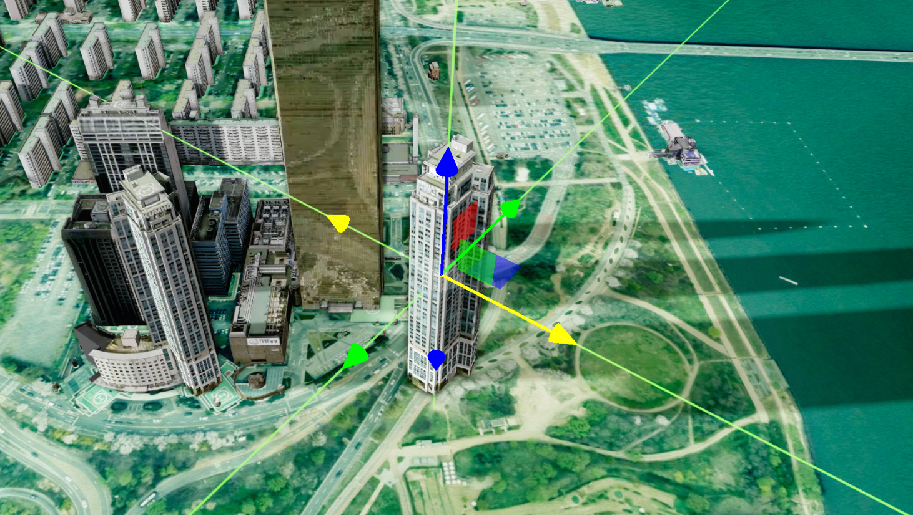
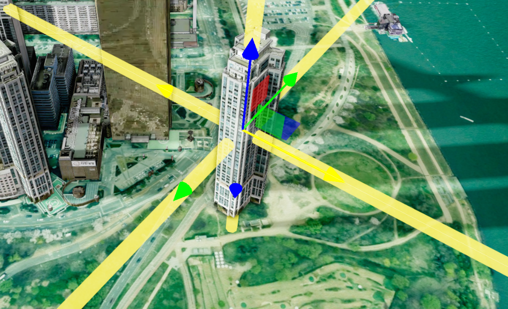

1. 시작하기
모델 편집을 위해서는 먼저 app에 등록된 모드를 활성화해야 합니다.
app.getAnalysis(mode) api를 통해 등록된 모드를 가져온 후, active()를 호출하여 활성화합니다.
또는 app.activeAnalysis(mode)를 통해 바로 활성할수 있습니다.
모델 편집 모드의 이름은GizmoModel 입니다.
app.getAnalysis(mode) api를 통해 등록된 모드를 가져온 후, active()를 호출하여 활성화합니다.
또는 app.activeAnalysis(mode)를 통해 바로 활성할수 있습니다.
모델 편집 모드의 이름은
U3dApp.getAnalysis(analysisName) : app에 등록되 분석모드를 가져오는 함수
analysisNamestring : 분석모드 이름
UAnalyGizmoModel.active() : 모델 편집 모드 활성 함수
UAnalyGizmoModel.deactive() : 모델 편집 모드 비활성 함수
const gizmo = app.getAnalysis('GizmoModel');
if(gizmo) gizmo.active(); // 모드 활성
if(gizmo) gizmo.deactive(); // 모드 비활성
// 또는
app.activeAnalysis('GizmoModel');
현재 모델 폄집 모드가 활성화되어있는지 여부는 isActive()를 통해 확인 가능합니다.
UAnalyGizmoModel.isActive() : 모델 편집 모드의 활성화 여부 확인 함수
const gizmo = app.getAnalysis('GizmoModel');
if(gizmo) {
if(gizmo.isActive()) toast('모델 편집 모드 활성!');
else toast('모델 편집 모드 비활성!');
}
2. 편집 타입 선택
편집 모드를 활성화 했다면 이제 어떤 편집을 수행할 지 타입을 선택할 차례입니다.
현재 지원되는 타입은 세가지 입니다.translate(위치편집), rotate(회전편집),scale(크기편집)
초기 설정은 위치 편집입니다. 편집 타입은setMode() 를 통해 변경 합니다.
현재 지원되는 타입은 세가지 입니다.
초기 설정은 위치 편집입니다. 편집 타입은
UAnalyGizmoModel.setMode(type) : 편집 타입을 설정하는 함수
typestring : 편집 타입 (translate, rotate, scale)
const gizmo = app.getAnalysis('GizmoModel');
if(gizmo) {
gizmo.setMode('translate'); // 위치 편집
gizmo.setMode('rotate'); // 회전 편집
gizmo.setMode('scale'); // 크기 편집
}
3. 편집 모델 등록
모든 준비가 끝났으면 이제 편집할 모델을 등록을 해야합니다.
편집 모델 등록은 setObject(편질할 모델 객체) api를 통해 등록합니다.
UAnalyGizmoModel.setObject(objects) : 편집할 모델을 등록하는 함수
objectsObject3D|Object3D[] : 모델 또는 모델 배열
// 편집 모델 생성
const geometry = new app._THREE.BoxGeometry(1, 1, 1);
const material = new app._THREE.MeshBasicMaterial();
const boxMesh = new app._THREE.Mesh(geometry, material);
// 편집 모델 등록
const gizmo = app.getAnalysis('GizmoModel');
if(gizmo) {
gizmo.setObject(boxMesh);
}
4. 이벤트 사용
모델 편집 중이거나 종료되었을 때 추가 작업을 수행할 수 있도록 사용자 콜백 함수를 등록할 수 있습니다.
setUpdateFunc(func) api는 모델 편집 중에 계속 호출될 함수를 지정합니다.
etEndFunc(func) api는 모델 편집이 종료됬을 때 호출될 함수를 지정합니다.
UAnalyGizmoModel.setUpdateFunc(func) : 편집 중 호출될 함수를 등록
funcFunction : 사용자 콜백 함수
UAnalyGizmoModel.setEndFunc(func) : 편집 종료 시 호출될 함수를 등록
funcFunction : 사용자 콜백 함수
function gizmoUpdate (gizmo, targets, controller) {
if (gizmo.isDrag === false) return;
console.log('모델 편집 중...');
}
function gizmoEnd (gizmo, targets, controller) {
console.log('모델 편집 종료');
}
// 콜백함수 등록
gizmo.setUpdateFunc(gizmoUpdate);
gizmo.setEndFunc(gizmoEnd);
5. 가이드 선 사용
모델 편집 시 위치 파악을 돕기 위해 가이드 선을 사용할 수 있습니다.
가이드 선을 통해 현재 편집 중인 모델의 위치를 보다 정확하게 확인할 수 있습니다.
가이드 선은setUseLaser(use) API를 통해 켜거나 끌 수 있습니다.
가이드 선은
UAnalyGizmoModel.setUseLaser(use) : 가이드 선을 사용할지 말지 설정하는 함수
useboolean : 가이드 선(레이저) 사용 여부
const gizmo = app.getAnalysis('GizmoModel');
gizmo?.setUseLaser(true); // 가이드 선(레이저) 사용
gizmo?.setUseLaser(false); // 가이드 선(레이저) 미사용
가이드 선 사용 시 사용 환경에 따라 가이드 선 스타일을 원하는대로 커스텀 할 수 있습니다.
setLaserStyle(opt) api를 통해 가이드 선의 색상, 투명도, 두께를 설정합니다.
UAnalyGizmoModel.setLaserStyle(opt) : 가이드 선 스타일을 설정하는 함수
optobject : 가이드 선 스타일 정보
opt.colorColor : 가이드 선 색상
opt.opacitynumber : 가이드 선 투명도
opt.radiusnumber : 가이드 선 두께
opt.colorColor : 가이드 선 색상
opt.opacitynumber : 가이드 선 투명도
opt.radiusnumber : 가이드 선 두께
const gizmo = app.getAnalysis('GizmoModel');
gizmo.setUseLaser(true); // 가이드 선 on
// 가이드 선 스타일 설정
gizmo.setLaserStyle({
color : '#fff000',
opacity: 0.7,
radius: 5
})

